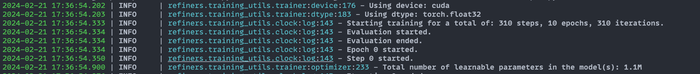
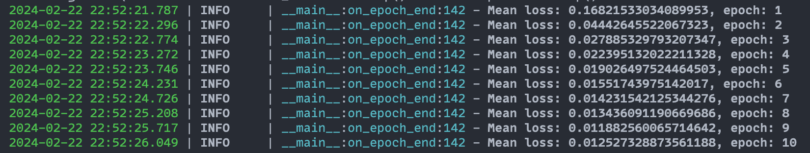
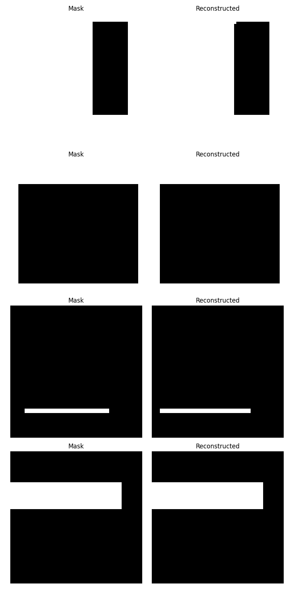

Training 101¶
This guide will walk you through training a model using Refiners. We built the training_utils module to provide a simple, flexible, statically type-safe interface.
We will use a simple model and a toy dataset for demonstration purposes. The model will be a simple autoencoder, and the dataset will be a synthetic dataset of rectangles of different sizes.
Pre-requisites¶
We recommend installing Refiners targeting a specific commit hash to avoid unexpected changes in the API. You also get the benefit of having a perfectly reproducible environment.
-
with rye (recommended):
-
with pip:
Model¶
Let's start by building our autoencoder using Refiners.
Expand to see the autoencoder model.
from refiners.fluxion import layers as fl
class ConvBlock(fl.Chain):
def __init__(self, in_channels: int, out_channels: int) -> None:
super().__init__(
fl.Conv2d(
in_channels=in_channels,
out_channels=out_channels,
kernel_size=3,
padding=1,
groups=min(in_channels, out_channels)
),
fl.LayerNorm2d(out_channels),
fl.SiLU(),
fl.Conv2d(
in_channels=out_channels,
out_channels=out_channels,
kernel_size=1,
padding=0,
),
fl.LayerNorm2d(out_channels),
fl.SiLU(),
)
class ResidualBlock(fl.Sum):
def __init__(self, in_channels: int, out_channels: int) -> None:
super().__init__(
ConvBlock(in_channels=in_channels, out_channels=out_channels),
fl.Conv2d(
in_channels=in_channels,
out_channels=out_channels,
kernel_size=3,
padding=1,
),
)
class Encoder(fl.Chain):
def __init__(self) -> None:
super().__init__(
ResidualBlock(in_channels=1, out_channels=8),
fl.Downsample(channels=8, scale_factor=2, register_shape=False),
ResidualBlock(in_channels=8, out_channels=16),
fl.Downsample(channels=16, scale_factor=2, register_shape=False),
ResidualBlock(in_channels=16, out_channels=32),
fl.Downsample(channels=32, scale_factor=2, register_shape=False),
fl.Reshape(2048),
fl.Linear(in_features=2048, out_features=256),
fl.SiLU(),
fl.Linear(in_features=256, out_features=256),
)
class Decoder(fl.Chain):
def __init__(self) -> None:
super().__init__(
fl.Linear(in_features=256, out_features=256),
fl.SiLU(),
fl.Linear(in_features=256, out_features=2048),
fl.Reshape(32, 8, 8),
ResidualBlock(in_channels=32, out_channels=32),
ResidualBlock(in_channels=32, out_channels=32),
fl.Upsample(channels=32, upsample_factor=2),
ResidualBlock(in_channels=32, out_channels=16),
ResidualBlock(in_channels=16, out_channels=16),
fl.Upsample(channels=16, upsample_factor=2),
ResidualBlock(in_channels=16, out_channels=8),
ResidualBlock(in_channels=8, out_channels=8),
fl.Upsample(channels=8, upsample_factor=2),
ResidualBlock(in_channels=8, out_channels=8),
ResidualBlock(in_channels=8, out_channels=1),
fl.Sigmoid(),
)
class Autoencoder(fl.Chain):
def __init__(self) -> None:
super().__init__(
Encoder(),
Decoder(),
)
@property
def encoder(self) -> Encoder:
return self.ensure_find(Encoder)
@property
def decoder(self) -> Decoder:
return self.ensure_find(Decoder)
We now have a fully functional autoencoder that takes an image with one channel of size 64x64 and compresses it to a vector of size 256 (x16 compression). The decoder then takes this vector and reconstructs the original image.
import torch
autoencoder = Autoencoder()
x = torch.randn(2, 1, 64, 64) # batch of 2 images
z = autoencoder.encoder(x) # [2, 256]
x_reconstructed = autoencoder.decoder(z) # [2, 1, 64, 64]
Dataset¶
We will use a synthetic dataset of rectangles of different sizes. The dataset will be generated on the fly using this simple function:
import random
from typing import Generator
from PIL import Image
from refiners.fluxion.utils import image_to_tensor
def generate_mask(size: int, seed: int | None = None) -> Generator[torch.Tensor, None, None]:
"""Generate a tensor of a binary mask of size `size` using random rectangles."""
if seed is None:
seed = random.randint(0, 2**32 - 1)
random.seed(seed)
while True:
rectangle = Image.new(
"L", (random.randint(1, size), random.randint(1, size)), color=255
)
mask = Image.new("L", (size, size))
mask.paste(
rectangle,
(
random.randint(0, size - rectangle.width),
random.randint(0, size - rectangle.height),
),
)
tensor = image_to_tensor(mask)
if random.random() > 0.5:
tensor = 1 - tensor
yield tensor
To generate a mask, do:
from refiners.fluxion.utils import tensor_to_image
mask = next(generate_mask(64, seed=42))
tensor_to_image(mask).save("mask.png")
Here are a two examples of generated masks:
Trainer¶
We will now create a Trainer class to handle the training loop. This class will manage the model, the optimizer, the loss function, and the dataset. It will also orchestrate the training loop and the evaluation loop.
But first, we need to define the batch type that will be used to represent a batch for the forward and backward pass and the configuration associated with the trainer.
Batch¶
Our batches are composed of a single tensor representing the images. We will define a simple Batch type to implement this.
Config¶
We will now define the configuration for the autoencoder. It holds the configuration for the training loop, the optimizer, and the learning rate scheduler. It should inherit refiners.training_utils.BaseConfig and has the following mandatory attributes:
TrainingConfig: The configuration for the training loop, including the duration of the training, the batch size, device, dtype, etc.OptimizerConfig: The configuration for the optimizer, including the learning rate, weight decay, etc.LRSchedulerConfig: The configuration for the learning rate scheduler, including the scheduler type, parameters, etc.
Example:
from refiners.training_utils import BaseConfig, TrainingConfig, OptimizerConfig, LRSchedulerConfig, Optimizers, LRSchedulerType, Epoch
class AutoencoderConfig(BaseConfig):
...
training = TrainingConfig(
duration=Epoch(1000),
device="cuda" if torch.cuda.is_available() else "cpu",
dtype="float32"
)
optimizer = OptimizerConfig(
optimizer=Optimizers.AdamW,
learning_rate=1e-4,
)
lr_scheduler = LRSchedulerConfig(
type=LRSchedulerType.ConstantLR
)
config = AutoencoderConfig(
training=training,
optimizer=optimizer,
lr_scheduler=lr_scheduler,
)
Subclass¶
We can now define the Trainer subclass. It should inherit from refiners.training_utils.Trainer and implement the following methods:
create_data_iterable: TheTrainerwill call this method to create and cache the data iterable. During training, the loop will pull batches from this iterable and pass them to thecompute_lossmethod. Every time the iterable is exhausted, an epoch ends.compute_loss: This method should take a Batch and return the loss tensor.
Here is a simple implementation of the create_data_iterable method. For this toy example, we will generate a simple list of Batch objects containing random masks. Later you can replace this with torch.utils.data.DataLoader or any other data loader with more complex features that support shuffling, parallel loading, etc.
from functools import cached_property
from refiners.training_utils import Trainer
class AutoencoderConfig(BaseConfig):
num_images: int = 2048
batch_size: int = 32
class AutoencoderTrainer(Trainer[AutoencoderConfig, Batch]):
def create_data_iterable(self) -> list[Batch]:
dataset: list[Batch] = []
generator = generate_mask(size=64)
for _ in range(self.config.num_images // self.config.batch_size):
masks = [next(generator) for _ in range(self.config.batch_size)]
dataset.append(Batch(image=torch.cat(masks, dim=0)))
return dataset
def compute_loss(self, batch: Batch) -> torch.Tensor:
raise NotImplementedError("We'll implement this later")
trainer = AutoencoderTrainer(config)
Model registration¶
For the Trainer to be able to handle the model, we need to register it.
We need two things to do so:
- Add
refiners.training_utils.ModelConfigattribute to the Config namedautoencoder. - Add a method to the Trainer subclass that returns the model decorated with
@register_modeldecorator. This method should take theModelConfigas an argument. The Trainer's__init__will register the models and add any parameters to the optimizer that haverequires_gradenabled.
After registering the model, the self.autoencoder attribute will be available in the Trainer.
from refiners.training_utils import ModelConfig, register_model
class AutoencoderModelConfig(ModelConfig):
pass
class AutoencoderConfig(BaseConfig):
num_images: int = 2048
batch_size: int = 32
autoencoder: AutoencoderModelConfig
class AutoencoderTrainer(Trainer[AutoencoderConfig, Batch]):
# ... other methods
@register_model()
def autoencoder(self, config: AutoencoderModelConfig) -> Autoencoder:
return Autoencoder()
def compute_loss(self, batch: Batch) -> torch.Tensor:
batch.image = batch.image.to(self.device, self.dtype)
x_reconstructed = self.autoencoder.decoder(
self.autoencoder.encoder(batch.image)
)
return F.binary_cross_entropy(x_reconstructed, batch.image)
We now have a fully functional Trainer that can train our autoencoder. We can now call the train method to start the training loop.

Logging¶
Let's write a simple logging callback to log the loss and the reconstructed images during training. A callback is a class that inherits from refiners.training_utils.Callback and implement any of the following methods:
on_init_beginon_init_endon_train_beginon_train_endon_epoch_beginon_epoch_endon_step_beginon_step_endon_backward_beginon_backward_endon_optimizer_step_beginon_optimizer_step_endon_compute_loss_beginon_compute_loss_endon_evaluate_beginon_evaluate_endon_lr_scheduler_step_beginon_lr_scheduler_step_end
We will implement the on_epoch_end method to log the loss and the reconstructed images and the on_compute_loss_end method to store the loss in a list.
from refiners.training_utils import Callback
from loguru import logger
from typing import Any
class LoggingCallback(Callback[Any]):
losses: list[float] = []
def on_compute_loss_end(self, loss: torch.Tensor) -> None:
self.losses.append(loss.item())
def on_epoch_end(self, epoch: int) -> None:
mean_loss = sum(self.losses) / len(self.losses)
logger.info(f"Mean loss: {mean_loss}, epoch: {epoch}")
self.losses = []
Exactly like models, we need to register the callback to the Trainer. We can do so by adding a CallbackConfig attribute to the config named logging and adding a method to the Trainer class that returns the callback decorated with @register_callback decorator.
from refiners.training_utils import CallbackConfig, register_callback
class AutoencoderConfig(BaseConfig):
# ... other properties
logging: CallbackConfig = CallbackConfig()
class AutoencoderTrainer(Trainer[AutoencoderConfig, Batch]):
# ... other methods
@register_callback()
def logging(self, config: CallbackConfig) -> LoggingCallback:
return LoggingCallback()

Evaluation¶
Let's add an evaluation step to the Trainer. We will generate a few masks and their reconstructions and save them to a file. We start by implementing a compute_evaluation method, then we register a callback to call this method at regular intervals.
class AutoencoderTrainer(Trainer[AutoencoderConfig, Batch]):
# ... other methods
def compute_evaluation(self) -> None:
generator = generate_mask(size=64, seed=0)
grid: list[tuple[Image.Image, Image.Image]] = []
for _ in range(4):
mask = next(generator).to(self.device, self.dtype)
x_reconstructed = self.autoencoder.decoder(
self.autoencoder.encoder(mask)
)
loss = F.mse_loss(x_reconstructed, mask)
logger.info(f"Validation loss: {loss.detach().cpu().item()}")
grid.append(
(tensor_to_image(mask), tensor_to_image((x_reconstructed>0.5).float()))
)
import matplotlib.pyplot as plt
_, axes = plt.subplots(4, 2, figsize=(8, 16))
for i, (mask, reconstructed) in enumerate(grid):
axes[i, 0].imshow(mask, cmap='gray')
axes[i, 0].axis('off')
axes[i, 0].set_title('Mask')
axes[i, 1].imshow(reconstructed, cmap='gray')
axes[i, 1].axis('off')
axes[i, 1].set_title('Reconstructed')
plt.tight_layout()
plt.savefig(f"result_{trainer.clock.epoch}.png")
plt.close()
We starting by implementing an EvaluationConfig that controls the evaluation interval and the seed for the random generator.
from refiners.training_utils.config import TimeValueField
class EvaluationConfig(CallbackConfig):
interval: TimeValueField
seed: int
The TimeValueField is a custom field that allow Pydantic to parse a string representing a time value (e.g., "50:epochs") into a TimeValue object. This is useful to specify the evaluation interval in the configuration file.
from refiners.training_utils import scoped_seed, Callback
class EvaluationCallback(Callback[Any]):
def __init__(self, config: EvaluationConfig) -> None:
self.config = config
def on_epoch_end(self, trainer: Trainer) -> None:
# The `is_due` method checks if the current epoch is a multiple of the interval.
if not trainer.clock.is_due(self.config.interval):
return
# The `scoped_seed` context manager encapsulates the random state for the evaluation and restores it after the
# evaluation.
with scoped_seed(self.config.seed):
trainer.compute_evaluation()
We can now register the callback to the Trainer.
class AutoencoderTrainer(Trainer[AutoencoderConfig, Batch]):
# ... other methods
@register_callback()
def evaluation(self, config: EvaluationConfig) -> EvaluationCallback:
return EvaluationCallback(config)
We can now train the model and see the results in the result_{epoch}.png files.

Wrap up¶
You can train this toy model using the code below:
Expand to see the full code.
import random
from dataclasses import dataclass
from typing import Any, Generator
import torch
from loguru import logger
from PIL import Image
from torch.nn import functional as F
from refiners.fluxion import layers as fl
from refiners.fluxion.utils import image_to_tensor, tensor_to_image
from refiners.training_utils import (
BaseConfig,
Callback,
CallbackConfig,
ClockConfig,
Epoch,
LRSchedulerConfig,
LRSchedulerType,
ModelConfig,
OptimizerConfig,
Optimizers,
Trainer,
TrainingConfig,
register_callback,
register_model,
)
from refiners.training_utils.common import scoped_seed
from refiners.training_utils.config import TimeValueField
class ConvBlock(fl.Chain):
def __init__(self, in_channels: int, out_channels: int) -> None:
super().__init__(
fl.Conv2d(
in_channels=in_channels,
out_channels=out_channels,
kernel_size=3,
padding=1,
groups=min(in_channels, out_channels),
),
fl.LayerNorm2d(out_channels),
fl.SiLU(),
fl.Conv2d(
in_channels=out_channels,
out_channels=out_channels,
kernel_size=1,
padding=0,
),
fl.LayerNorm2d(out_channels),
fl.SiLU(),
)
class ResidualBlock(fl.Sum):
def __init__(self, in_channels: int, out_channels: int) -> None:
super().__init__(
ConvBlock(in_channels=in_channels, out_channels=out_channels),
fl.Conv2d(
in_channels=in_channels,
out_channels=out_channels,
kernel_size=3,
padding=1,
),
)
class Encoder(fl.Chain):
def __init__(self) -> None:
super().__init__(
ResidualBlock(in_channels=1, out_channels=8),
fl.Downsample(channels=8, scale_factor=2, register_shape=False),
ResidualBlock(in_channels=8, out_channels=16),
fl.Downsample(channels=16, scale_factor=2, register_shape=False),
ResidualBlock(in_channels=16, out_channels=32),
fl.Downsample(channels=32, scale_factor=2, register_shape=False),
fl.Reshape(2048),
fl.Linear(in_features=2048, out_features=256),
fl.SiLU(),
fl.Linear(in_features=256, out_features=256),
)
class Decoder(fl.Chain):
def __init__(self) -> None:
super().__init__(
fl.Linear(in_features=256, out_features=256),
fl.SiLU(),
fl.Linear(in_features=256, out_features=2048),
fl.Reshape(32, 8, 8),
ResidualBlock(in_channels=32, out_channels=32),
ResidualBlock(in_channels=32, out_channels=32),
fl.Upsample(channels=32, upsample_factor=2),
ResidualBlock(in_channels=32, out_channels=16),
ResidualBlock(in_channels=16, out_channels=16),
fl.Upsample(channels=16, upsample_factor=2),
ResidualBlock(in_channels=16, out_channels=8),
ResidualBlock(in_channels=8, out_channels=8),
fl.Upsample(channels=8, upsample_factor=2),
ResidualBlock(in_channels=8, out_channels=8),
ResidualBlock(in_channels=8, out_channels=1),
fl.Sigmoid(),
)
class Autoencoder(fl.Chain):
def __init__(self) -> None:
super().__init__(
Encoder(),
Decoder(),
)
@property
def encoder(self) -> Encoder:
return self.ensure_find(Encoder)
@property
def decoder(self) -> Decoder:
return self.ensure_find(Decoder)
def generate_mask(size: int, seed: int | None = None) -> Generator[torch.Tensor, None, None]:
"""Generate a tensor of a binary mask of size `size` using random rectangles."""
if seed is None:
seed = random.randint(0, 2**32 - 1)
random.seed(seed)
while True:
rectangle = Image.new("L", (random.randint(1, size), random.randint(1, size)), color=255)
mask = Image.new("L", (size, size))
mask.paste(
rectangle,
(
random.randint(0, size - rectangle.width),
random.randint(0, size - rectangle.height),
),
)
tensor = image_to_tensor(mask)
if random.random() > 0.5:
tensor = 1 - tensor
yield tensor
@dataclass
class Batch:
image: torch.Tensor
class AutoencoderModelConfig(ModelConfig):
pass
class LoggingCallback(Callback[Trainer[Any, Any]]):
losses: list[float] = []
def on_compute_loss_end(self, trainer: Trainer[Any, Any]) -> None:
self.losses.append(trainer.loss.detach().cpu().item())
def on_epoch_end(self, trainer: Trainer[Any, Any]) -> None:
mean_loss = sum(self.losses) / len(self.losses)
logger.info(f"Mean loss: {mean_loss}, epoch: {trainer.clock.epoch}")
self.losses = []
class EvaluationConfig(CallbackConfig):
interval: TimeValueField
seed: int
class EvaluationCallback(Callback["AutoencoderTrainer"]):
def __init__(self, config: EvaluationConfig) -> None:
self.config = config
def on_epoch_end(self, trainer: "AutoencoderTrainer") -> None:
# The `is_due` method checks if the current epoch is a multiple of the interval.
if not trainer.clock.is_due(self.config.interval):
return
# The `scoped_seed` context manager encapsulates the random state for the evaluation and restores it after the
# evaluation.
with scoped_seed(self.config.seed):
trainer.compute_evaluation()
class AutoencoderConfig(BaseConfig):
num_images: int = 2048
batch_size: int = 32
autoencoder: AutoencoderModelConfig
evaluation: EvaluationConfig
logging: CallbackConfig = CallbackConfig()
autoencoder_config = AutoencoderModelConfig(
requires_grad=True, # set during registration to set the requires_grad attribute of the model.
)
training = TrainingConfig(
duration=Epoch(200),
device="cuda" if torch.cuda.is_available() else "cpu",
dtype="float32",
)
optimizer = OptimizerConfig(
optimizer=Optimizers.AdamW,
learning_rate=1e-4,
)
lr_scheduler = LRSchedulerConfig(type=LRSchedulerType.CONSTANT_LR)
config = AutoencoderConfig(
training=training,
optimizer=optimizer,
lr_scheduler=lr_scheduler,
autoencoder=autoencoder_config,
evaluation=EvaluationConfig(interval=Epoch(50), seed=0),
clock=ClockConfig(verbose=False), # to disable the default clock logging
)
class AutoencoderTrainer(Trainer[AutoencoderConfig, Batch]):
def create_data_iterable(self) -> list[Batch]:
dataset: list[Batch] = []
generator = generate_mask(size=64)
for _ in range(self.config.num_images // self.config.batch_size):
masks = [next(generator).to(self.device, self.dtype) for _ in range(self.config.batch_size)]
dataset.append(Batch(image=torch.cat(masks, dim=0)))
return dataset
@register_model()
def autoencoder(self, config: AutoencoderModelConfig) -> Autoencoder:
return Autoencoder()
def compute_loss(self, batch: Batch) -> torch.Tensor:
batch.image = batch.image.to(self.device, self.dtype)
x_reconstructed = self.autoencoder.decoder(self.autoencoder.encoder(batch.image))
return F.binary_cross_entropy(x_reconstructed, batch.image)
def compute_evaluation(self) -> None:
generator = generate_mask(size=64, seed=0)
grid: list[tuple[Image.Image, Image.Image]] = []
validation_losses: list[float] = []
for _ in range(4):
mask = next(generator).to(self.device, self.dtype)
x_reconstructed = self.autoencoder.decoder(self.autoencoder.encoder(mask))
loss = F.mse_loss(x_reconstructed, mask)
validation_losses.append(loss.detach().cpu().item())
grid.append((tensor_to_image(mask), tensor_to_image((x_reconstructed > 0.5).float())))
mean_loss = sum(validation_losses) / len(validation_losses)
logger.info(f"Mean validation loss: {mean_loss}, epoch: {self.clock.epoch}")
import matplotlib.pyplot as plt
_, axes = plt.subplots(4, 2, figsize=(8, 16)) # type: ignore
for i, (mask, reconstructed) in enumerate(grid):
axes[i, 0].imshow(mask, cmap="gray")
axes[i, 0].axis("off")
axes[i, 0].set_title("Mask")
axes[i, 1].imshow(reconstructed, cmap="gray")
axes[i, 1].axis("off")
axes[i, 1].set_title("Reconstructed")
plt.tight_layout() # type: ignore
plt.savefig(f"result_{trainer.clock.epoch}.png") # type: ignore
plt.close() # type: ignore
@register_callback()
def evaluation(self, config: EvaluationConfig) -> EvaluationCallback:
return EvaluationCallback(config)
@register_callback()
def logging(self, config: CallbackConfig) -> LoggingCallback:
return LoggingCallback()
trainer = AutoencoderTrainer(config)
trainer.train()